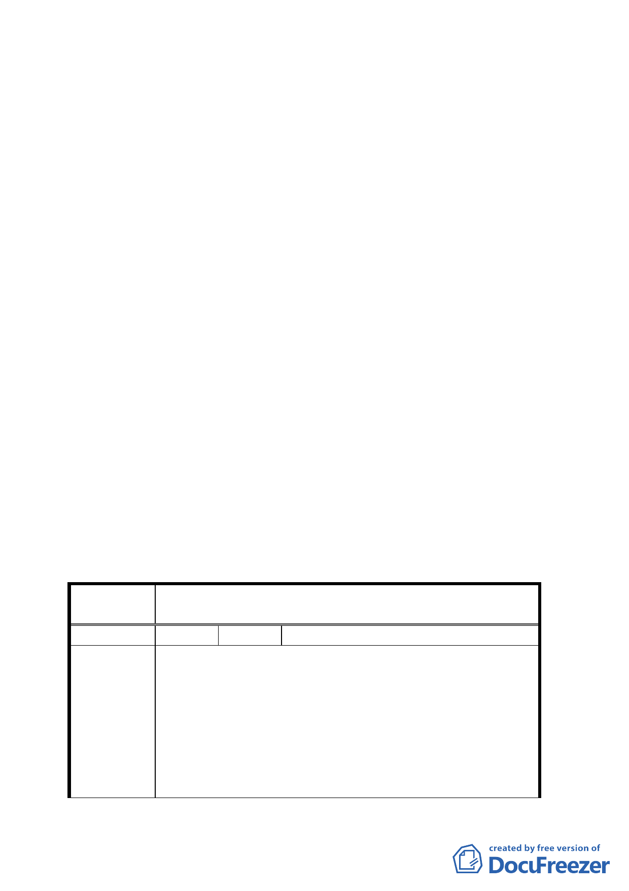

七、關於本案於公開展覽期間曾接獲諸多市民及民意代表書面
反對意見（共十一件詳如公民或團體所提意見綜理表，連
署人計二一○人），且教育局曾函覆陳立委學聖（北市教二
字第○九三三二九一三七○○號函）說明正審慎評估本變
更申請案中，據此，本會分別於九十三年五月五日以北市
畫會一字第○九三三○一一六九○○號、九十三年六月十
一日北市畫會一字第○九三三○一五五七○○號函催最新
辦理情形，以便後續審議事宜。
八、案經市府評估已無設校需求，並於九十三年七月二十三日
以府都規字第○九三一九○四九一○○號函檢送撤回案報
告案到會。
決議：
一、 本案同意市府所提之理由撤回計畫案。
二、 公民或團體所提意見委員會決議詳如附件綜理表
附帶決議：為有效利用本計畫案土地，請規劃單位納入文山區
都市計畫通盤檢討修訂使用計畫。
臺北市都市計畫委員會公民團體所提意見綜理表
案
名
變更臺北市文山區萬隆段二小段瀝青拌合場用地及住宅區
（專案國宅用地）為學校用地計畫案
編 號 １ 陳情人 秦議員儷舫
一、文山區向為本市最淳樸的文教區，居民素質高且為軍
公教職人員居多，居住品質一向頗受肯定。渠料市府
未經與民眾充分溝通之下，遽然下決定要將收容「出
陳情理由
現行為偏差、嚴重適應困難或特別需要保護之學生」
的中途學校「文心中學」，就蓋在人口密集國宅、社區
及兩所小學旁，消息傳出引起居民嚴重嘩然，抗議及
反對之聲四起。
二、據了解教育局計畫在文山區景福街與環河快速道路交
三